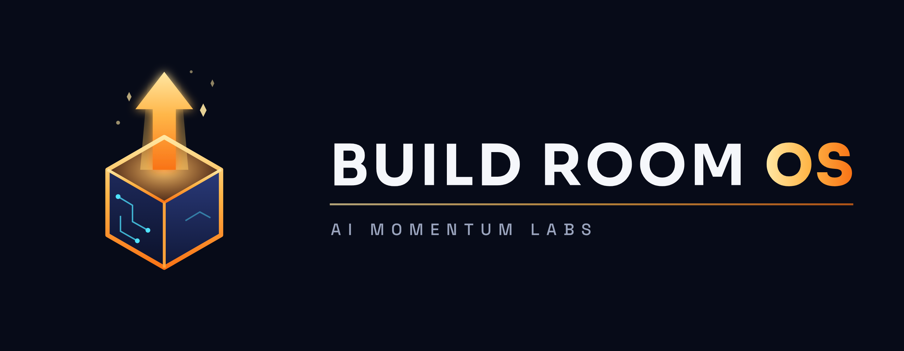

Get clients from LinkedIn without ads and without anything automated. It rewrites your profile so it works like a sales page, writes three posts a week from your stories, and gives you a short daily list of people worth talking to. You do the posting and messaging yourself, about 20 minutes a day.
Run a live event that sells: a 3-day bootcamp, a 5-day challenge, a workshop or a webinar. It works out how many people you need to invite, writes your emails one at a time, builds the calendar reminders, plans each day, and helps you close. Before anything goes out, it walks you through a checklist so your payment link and follow-up actually work.
All 30 tools now respond more reliably when you say their starting words. If one doesn't start, say Where do I start? and it will point you to the right one.
Say These Words (the PDF in your Build Room OS folder) now has five pages, including a page for each new tool. Print the new pages and keep them by your computer.
Already have Build Room OS? First get this week's version (the steps for that are on page 5). Then:
Best once you know what you'd sell at the end of the event (your offer). If you don't have one yet, say Help me build my signature offer first.
You'll download the new folder, then move your Business File into it so nothing you've built is lost.
BuildRoom_OS_2026-10-17.zip from the Members' area. It goes into your Downloads folder.BUILDROOM_BUSINESS_FILE.md. Right-click it and choose Copy.BuildRoom_OS_2026-10-17.zip from the Members' area.BuildRoom_OS into your Documents folder. This is your Build Room home; your Business File lives here.cd and one space. Don't press Enter yet.BuildRoom_OS folder from Documents into the Terminal window. Press Enter.claude and press Enter.BuildRoom_OS folder in Documents.claude and press Enter.When Claude is ready, type this and press Enter:
I'm new to the Build Room. Set me up.
It asks one question at a time. No wrong answers; stop and come back any time.
BuildRoom_OS folder.Type any of these into Claude, inside your Build Room OS folder, to start that tool.
| Say this | What it does |
|---|---|
| Start here | |
| I'm new to the Build Room. Set me up. | A tour and your first step |
| Where do I start? | Shows your progress and the one thing to do next |
| New this week | |
| Build my LinkedIn engine NEW | Profile, posts and a daily routine for LinkedIn clients |
| Who should I message on LinkedIn today? | Today's short list, with draft messages |
| Plan my LinkedIn week | Three posts and last week's results |
| How is my LinkedIn doing? | Your weekly LinkedIn scorecard |
| Plan my launch NEW | Plan a live event that sells |
| Is my launch ready? | The checklist before you invite anyone |
| How did my launch do? | Results and lessons for next time |
| Your foundation (in this order) | |
| Help me build my ideal client avatar | Who you serve, and their own words |
| Help me build my signature offer | What you sell, the price, the guarantee |
| Help me position my business | Why people should choose you |
| Write my offer page | A finished sales page |
| Say this | What it does |
|---|---|
| Getting clients | |
| Help me map my funnel | How strangers become clients, step by step |
| Help me build my opt-in page | A sign-up page and free gift |
| Build my follow-up system | Emails that follow up for you |
| Help me get more leads | Your network, outreach, referrals |
| Help me with my sales call | A sales script, plus practice |
| Where is my funnel leaking? | Where people drop off, and the fixes |
| Marketing and words | |
| Make me ads | Ad ideas and finished ads using your real photo |
| Make me a video | A video plan, script and edit around you |
| Write me the email | Any email, page or letter, in your voice |
| Find the words my clients actually use | Real customer language, with sources |
| Make my offer a no-brainer | Bonuses, guarantee, the offer math |
| Run discovery on this business | Research on your business, a client or a prospect |
| Say this | What it does |
|---|---|
| Running the business | |
| Help me document my processes | Step-by-step instructions anyone can follow |
| Help me hire someone | Job ad, interview questions, first week |
| Help me train my new hire | A training plan with checklists |
| What numbers should I be watching every week? | A one-page weekly dashboard |
| Anytime | |
| Let's brainstorm | A brainstorm that ends in a decision |
| Capture what we decided | Turns notes into a dated plan |
| Build my compass | Your values and strengths, in your words |
| Convene the board | Four advisers argue your decision |
| Extras (when you're ready) | |
| Set up my second brain | An Obsidian notes vault Claude reads |
| Build me a source watcher | Saves the best of podcasts and videos to your notes |
| Make me an agent | Designs a helper that runs a task for you |